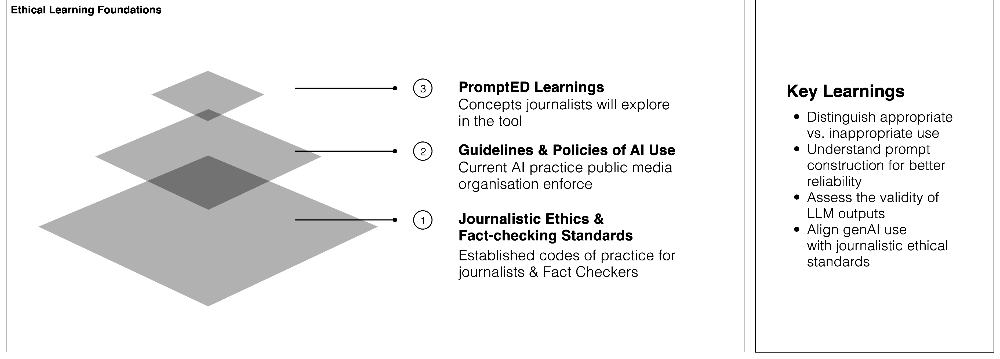
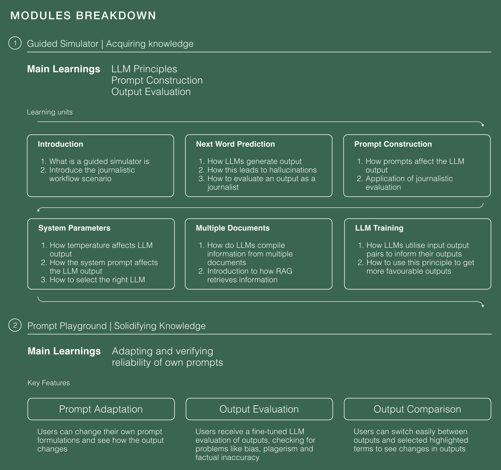
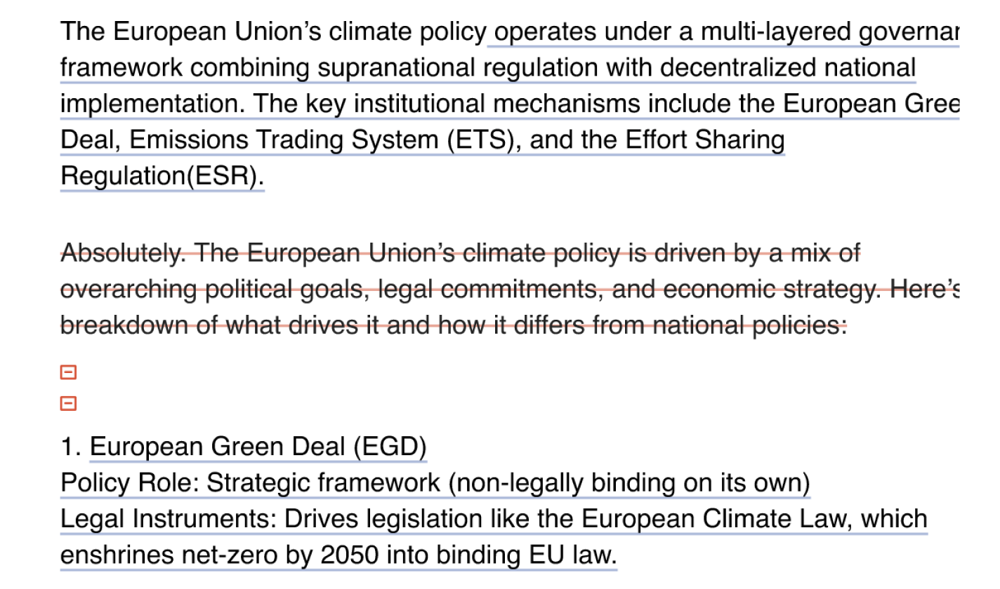
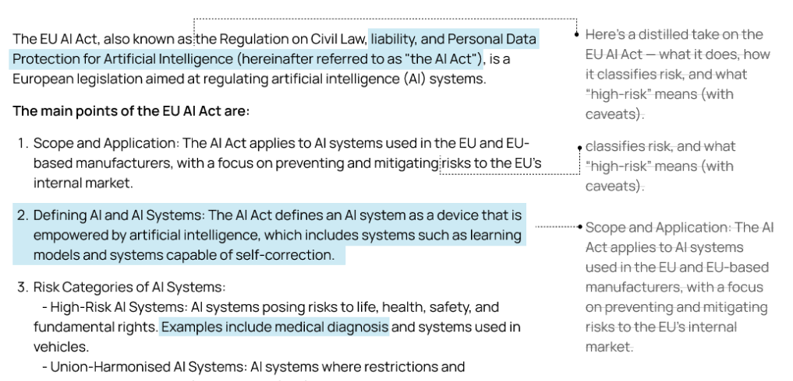
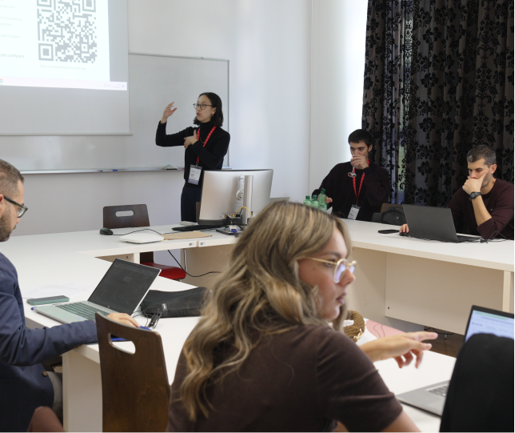
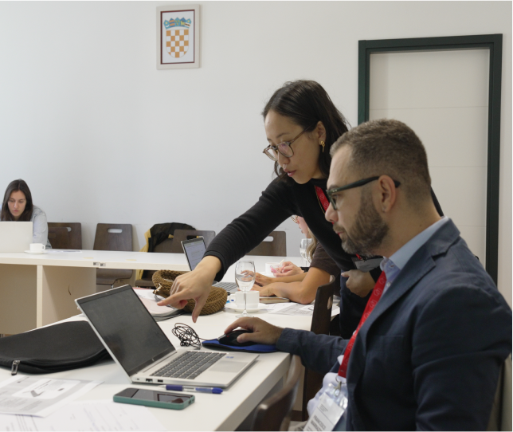
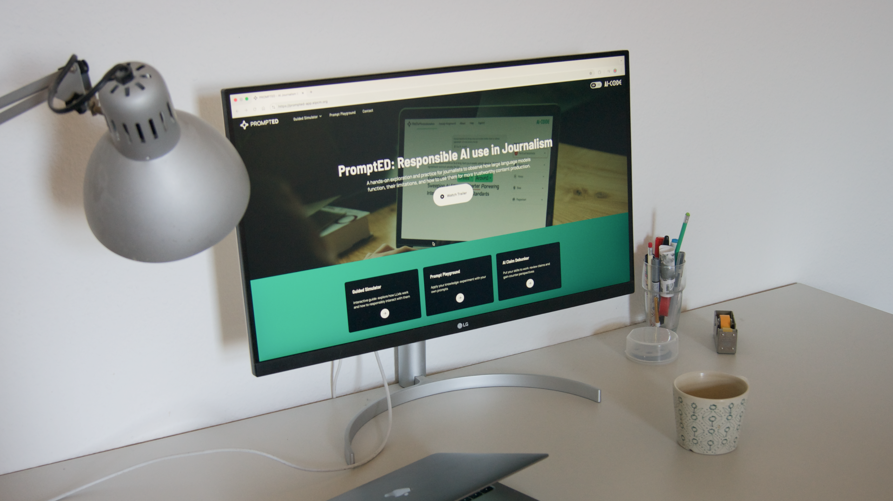

Empowering Media Professionals against Disinformation
PromptED is an interactive simulator that helps media professionals understand the principles of generative AI and their associated risks, to encourage responsible AI use within the journalistic workflow.
To understand media professionals' perceptions towards generative AI, a series of 18 semi-structured interviews were conducted. The results were combined with an extensive literature review and served as the basis for our design direction.
PromptED is an interactive simulator aimed at building appropriate mental models for journalists using experiential learning techniques. To ensure responsible use for trustworthy content production, it was key to base learnings on existing ethical guidelines.

Using existing journalistic workflows established in the interviews and the ethical foundations, a system of learnings for journalists was established. First, journalists explore the guided simulator, where they learn key principles, and next they apply these learnings with their own prompts in the playground.

Users can navigate a set path or select learnings of their own choosing. This allows users of varying knowledge to navigate PromptED appropriately.
In addition to the system design, I was responsible for design of the individual flows and features. A key challenge within the prompt playground was how to show changes between original and optimised output. It was decided to use a two-column system where past text was displayed next to new.


Throughout the entire project, co-creation sessions, workshops and user tests were leveraged to guide the design. In total, over 10 co-creation and workshop sessions were conducted, 9 individual usability tests were run, and an SUS score of 78.86 was achieved in preliminary testing alone. Users highlighted helpfulness and a match with real-world needs.


As an EU project, PromptED has the potential to be rolled out and aid journalists across the EU. Early indications have shown improvement in mental models already, and therefore help reduce the amount of misinformation entering our media.
